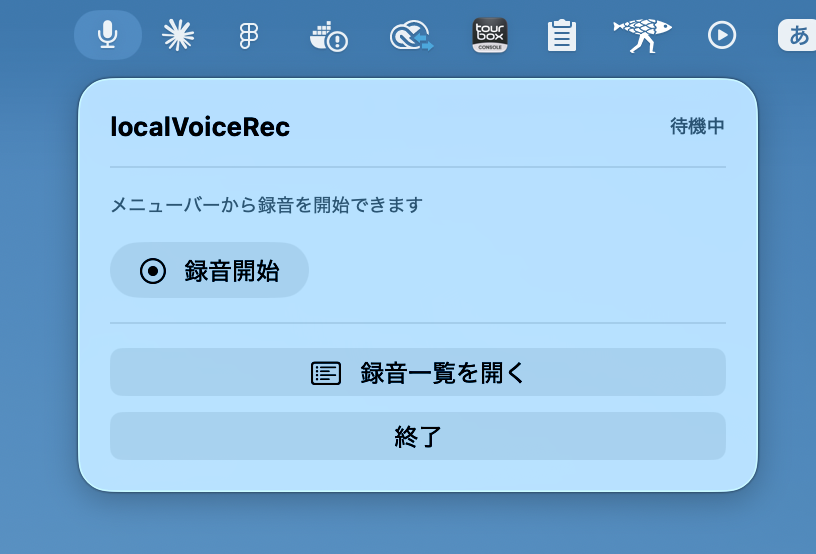
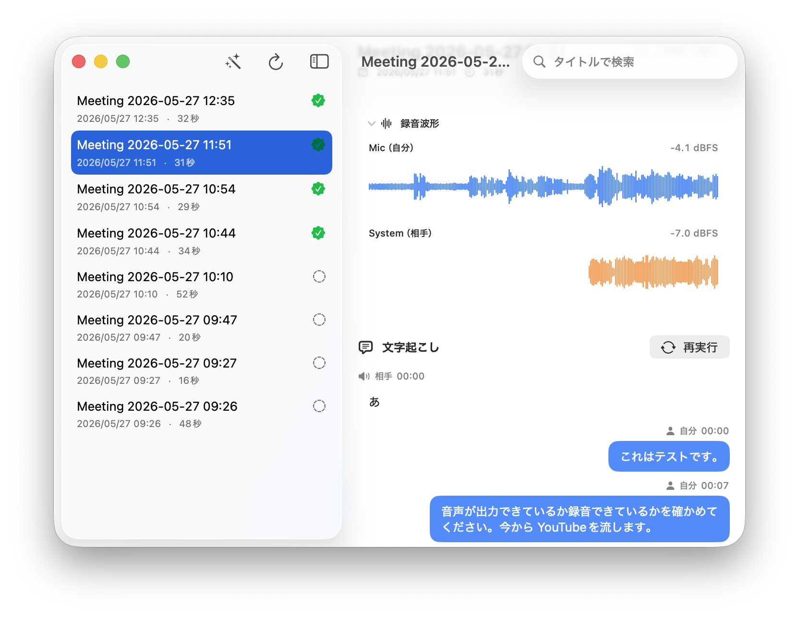

localVoiceRec
マイクとシステム音声を 2 チャンネルで収録し、
文字起こしと構造化要約まで、ネットワークを使わずに完了させます。
macOS 26 Tahoe · Apple Silicon · Apple Intelligence 有効

In the app
録音から、チャンネル別の波形、話者ごとの吹き出し、構造化要約まで。 左右に並ぶレイアウトで切り替えなしに完結します。

Privacy
ネットワーク権限を持たないため、アプリは外部と通信する経路自体を持ちません。
App Sandbox を有効化したうえで、network.client / network.server をいずれも付与していません。OS レベルで通信できません。
文字起こしは macOS 26 の SpeechAnalyzer、要約は Foundation Models（オンデバイス）。録音から議事録までインターネットは不要です。
Zoom / Teams / Meet にボットを招待しません。Mac が再生・収音する音声を Core Audio で直接取得するので、相手に気づかれません。
Inside
codesign --display --entitlements - でアプリの権限を確認すると、
ネットワーク系のキーが存在しないことが分かります。
[Key] com.apple.security.app-sandbox
[Bool] true
[Key] com.apple.security.device.audio-input
[Bool] true
[Key] com.apple.security.files.user-selected.read-write
[Bool] true
# network.client / network.server — 存在しないPipeline
01 — 収録
自分の声は AVAudioEngine、相手の声は Core Audio の process tap。話者分離は AI 推定ではなくチャンネルで確定するため、誤判定がありません。
02 — 文字起こし
各チャンネルを SpeechAnalyzer に流し、タイムスタンプ付きで書き起こします。日本語・英語に対応。
03 — 構造化要約
Foundation Models の @Generable で、概要・決定事項・アクションアイテム・未解決の問い・レビュー項目に整理します。
Export
詳細画面からエクスポートすれば、Slack や Notion にそのまま貼り付けられます。 Markdown とプレーンテキストの 2 形式に対応。
# 2026-05-27 ロードマップ確認
- 日時: 2026-05-27 14:30 〜 15:30 (60 分)
## 概要
Q3 の優先順位を整理し、Phase 1 から Phase 2 への
受け渡しを確定した。
## 決定事項
- 録音・文字起こし・要約は完全オンデバイスで進める
- Phase 2 のテスト計画を翌週金曜までに策定
## アクションアイテム
- [ ] テスト計画ドラフト（担当: 佐藤、期限: 06-03）
- [ ] セキュリティレビュー依頼（担当: 未割当）
## 文字起こし
[00:00] mic: では、本日のアジェンダから...
[00:03] system: 了解しました。まず...Requirements
Download
Developer ID 署名 + Notarization 済み。ダウンロード後の Gatekeeper 警告はありません。
version 0.1.0
build 1 · 2026-05-27
（リリースビルド時に更新されます）
shasum -a 256 ~/Downloads/localVoiceRec-0.1.0.dmg
FAQ
com.apple.security.network.client と
com.apple.security.network.server のどちらも entitlement に
含めていません。OS がアプリのソケット作成を拒否します。
codesign --display --entitlements - で確認できます。
~/Library/Containers/com.example.localVoiceRec/
の下です。アプリから個別／一括削除でき、削除時はファイル実体も同時に消去されます。